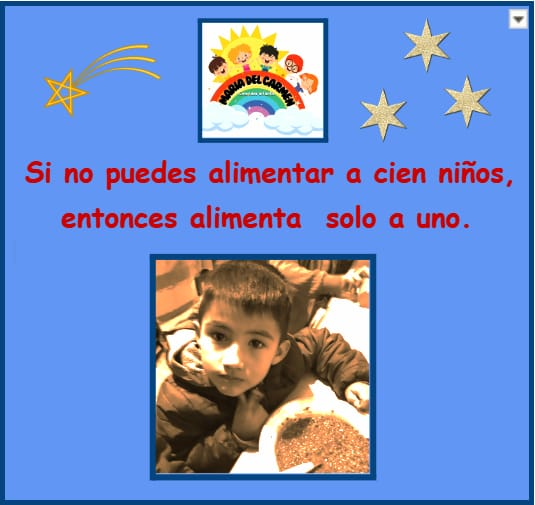

¡Ayudemos a los niños de Don Torcuato!
Estamos organizando una acción solidaria para preparar 100 viandas de Navidad para el Comedor Infantil María Del Carmen en el barrio Baires, Don Torcuato, Provincia de Buenos Aires. Los chicos del Club Hindú estarán ayudando otra vez en la cocina!
Los chicos de Hindú estarán ayudando en la cocina!
¡Necesitamos aportes de 2000 pesos!
Menú:
- Plato Principal: Milanesa
- Acompañamiento: Ensalada rusa
- Postre: Helado
¡Tu ayuda puede hacer la diferencia!

¡Ayúdanos a hacer una Navidad especial! Realiza tu aporte a través de Mercado Pago al alias
ayudar.navidad